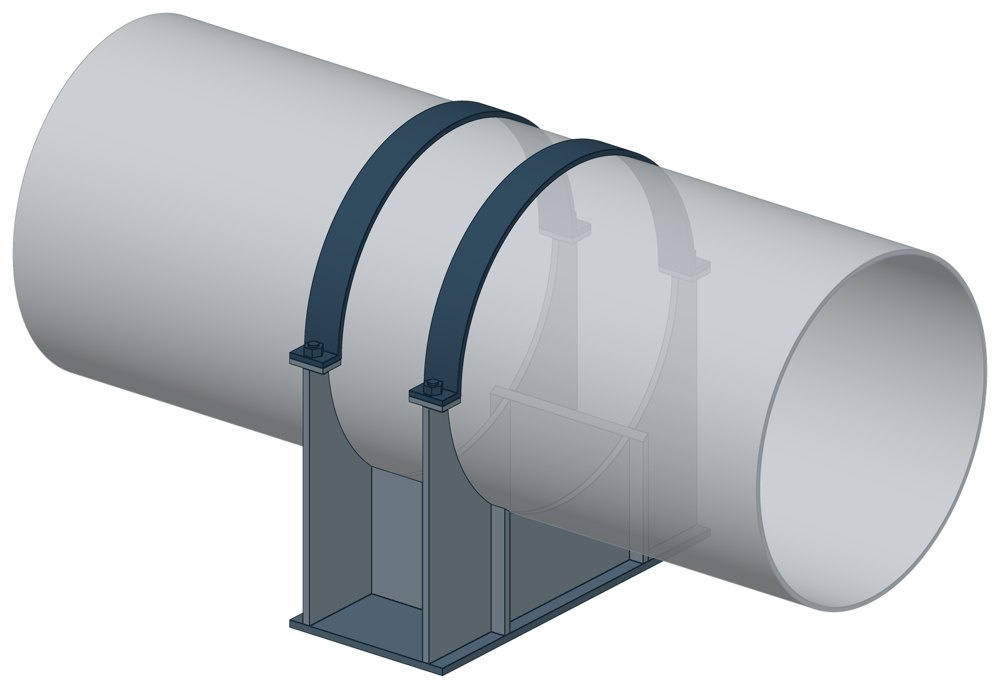

Опоры двуххомутовые скользящего типа ОСТ 108.275.30-80
ОСТ 108.275.30-80. Dн 325–720 мм, масса 25,1–115,7 кг.

- Диаметр трубы Dн
- 325–720 мм
- Документ
- ОСТ 108.275.30-80
- Исполнений
- 14
- Масса
- 25,1–115,7 кг
- 3D-модели
- у всех исполнений (условные: общий вид по габаритам)
Таблица исполнений ОСТ 108.275.30-80
| Обозначение | Код ПРОМБУРГ | Dнмм | Высотамм | Ширина опоры трубопроводамм | Длина опоры трубопроводамм | Массакг | 3D |
|---|---|---|---|---|---|---|---|
| 01 ОСТ 108.275.30-80 | ПБ-10830-0325-1 | 325 | 315 | 400 | 215 | 25,1 | 3D |
| 02 ОСТ 108.275.30-80 | ПБ-10830-0377-1 | 377 | 339 | 449 | 225 | 28,7 | 3D |
| 03 ОСТ 108.275.30-80 | ПБ-10830-0426-1 | 426 | 369 | 498 | 225 | 31,9 | 3D |
| 04 ОСТ 108.275.30-80 | ПБ-10830-0465-1 | 465 | 381 | 548 | 225 | 34,3 | 3D |
| 05 ОСТ 108.275.30-80 | ПБ-10830-0530-1 | 530 | 417 | 616 | 275 | 58,4 | 3D |
| 06 ОСТ 108.275.30-80 | ПБ-10830-0630-1 | 630 | 486 | 734 | 305 | 97,2 | 3D |
| 07 ОСТ 108.275.30-80 | ПБ-10830-0720-1 | 720 | 534 | 822 | 330 | 112,7 | 3D |
| Обозначение | Код ПРОМБУРГ | Dнмм | Высотамм | Ширина опоры трубопроводамм | Длина опоры трубопроводамм | Массакг | 3D |
|---|---|---|---|---|---|---|---|
| 08 ОСТ 108.275.30-80 | ПБ-10830-0325-2 | 325 | 315 | 400 | 215 | 25,1 | 3D |
| 09 ОСТ 108.275.30-80 | ПБ-10830-0377-2 | 377 | 339 | 449 | 225 | 28,7 | 3D |
| 10 ОСТ 108.275.30-80 | ПБ-10830-0426-2 | 426 | 369 | 498 | 225 | 31,9 | 3D |
| 11 ОСТ 108.275.30-80 | ПБ-10830-0465-2 | 465 | 381 | 548 | 225 | 34,3 | 3D |
| 12 ОСТ 108.275.30-80 | ПБ-10830-0530-2 | 530 | 417 | 616 | 275 | 58,4 | 3D |
| 13 ОСТ 108.275.30-80 | ПБ-10830-0630-2 | 630 | 485 | 734 | 305 | 95,4 | 3D |
| 14 ОСТ 108.275.30-80 | ПБ-10830-0720-2 | 720 | 534 | 822 | 330 | 115,7 | 3D |
Чтобы заказать, сообщите обозначение и код ПРОМБУРГ: +7 (499) 325-51-35, promburg@yandex.ru.
Нормативные документы
- ОСТ 108.275.30-80 Опоры скользящие двуххомутовые трубопроводов ТЭС и АЭС. Конструкция и размеры — документ, по которому изготавливается изделие
Связанные позиции
- Соседний тип: ОСТ 108.275.29-80 — Опоры однохомутовые
- Парная подвижная опора: ОСТ 108.275.26-80 — Двуххомутовые неподвижные опоры (общий диапазон Dн 325–720)
Собрать узел с этим изделием
- Конструктор узла: собрать участок с компенсатором под свои данные труба, длина, среда, условия — состав узла и спецификация бесплатно
На трубу Dн 325–720 мм в каталоге
Позиции каталога с исполнениями на те же наружные диаметры трубы.
Детали трубопровода
- Отвод стальной крутоизогнутый 90°, 09Г2С общих Dн: 6
- Отвод стальной крутоизогнутый 90° общих Dн: 6
- Фланец стальной воротниковый общих Dн: 6
- Фланец стальной плоский приварной общих Dн: 6
- Заглушка стальная эллиптическая общих Dн: 5
- Днище стальное эллиптическое общих Dн: 4
- Переход стальной концентрический общих Dн: 4
Компенсаторы
- Компенсатор сильфонный 2ОПКР общих Dн: 6
- Компенсатор сильфонный 2ОПКР (ИЯНШ) 2ОПКРИ общих Dн: 6
- Компенсатор сильфонный 2СКУ.М 2СКУМ общих Dн: 6
- Компенсатор сильфонный 2СКУ.М (ИЯНШ) 2СКУМИ общих Dн: 6
- Компенсатор сильфонный 2СКУ.ППМ (ИЯНШ) 2СКУППМИ общих Dн: 6
- Компенсатор сильфонный 2СКУ.ППУ (ИЯНШ) 2СКУППУИ общих Dн: 6
- Компенсатор сильфонный 2СКУ.ППУ/ОЦ (ИЯНШ) 2СКУППУОЦИ общих Dн: 6
- Компенсатор сильфонный КС общих Dн: 6
- Компенсатор сильфонный КСО общих Dн: 6
- Компенсатор сильфонный КСО (ИЯНШ) КСОИ общих Dн: 6
- Компенсатор сильфонный КСОФ общих Dн: 6
- Компенсатор сильфонный ОПКР общих Dн: 6
- Компенсатор сильфонный ОПКР (ИЯНШ) ОПКРИ общих Dн: 6
- Компенсатор сильфонный сейсмический общих Dн: 6
И ещё 15 типов — в оглавлении каталога.
Другие опоры и подвески
- Блок хомутовый ОСТ 24-125-113-01 общих Dн: 7
- Полухомуты для хомутовых блоков подвесок горизонтальных трубопроводов из хромо молибден о ванадиевых сталей ОСТ 24-125-114-01 общих Dн: 7
- Подвески хомутовые на опорной балке с проушинами ОСТ 24-125-118-01 общих Dн: 7
- Корпус на опорной балке с проушинами ОСТ 24-125-119-01 общих Dн: 7
- Полухомут для хомутовых опор ОСТ 24-125-120-01 общих Dн: 7
- Балки опорные с проушинами ОСТ 24-125-121-01 общих Dн: 7
- Подвески пружинные хомутовые на опорной балке ОСТ 24-125-122-01 общих Dн: 7
- Корпус на опорной балке для пружин ОСТ 24-125-123-01 общих Dн: 7
- Балки опорные для пружин ОСТ 24-125-124-01 общих Dн: 7
- Двуххомутовые неподвижные опоры ОСТ 108.275.26-80 общих Dн: 7
И ещё 84 типа — в оглавлении каталога.
Другие типы раздела
Опоры и блоки подвесок по ОСТ 108.275.26…60-80
- Двуххомутовые неподвижные опоры ОСТ 108.275.26-80
- Опоры однохомутовые ОСТ 108.275.29-80
- Катковые блоки с хомутовыми опорами ОСТ 108.275.45-80
- Блоки хомутовые ОСТ 108.275.52-80
- Хомутовые блоки ОСТ 108.275.53-80
- Хомутовые блоки с опорной балкой для подвески ОСТ 108.275.54-80
- Хомутовые блоки с опорной балкой ОСТ 108.275.55-80
- Хомутовые блоки для подвесок ОСТ 108.275.56-80
- Хомутовые блоки для подвесок трубопроводов ОСТ 108.275.57-80
- Пружинные блоки ОСТ 108.275.58-80
- Сдвоенные пружинные блоки ОСТ 108.275.59-80
- Опорные пружинные блоки ОСТ 108.275.60-80
Частые вопросы
Чем неподвижная опора отличается от подвижной?
Неподвижная закрепляет трубу в одной точке и принимает усилия от температурного расширения, давления и трения. Подвижная держит вес трубы и даёт ей перемещаться при нагреве. Неподвижные делят трассу на участки компенсации, подвижные стоят между ними. Место и тип каждой опоры задаёт проект.
Скользящая или катковая опора?
По СП 124.13330.2012 (п. 10.34) скользящие опоры применяют при всех способах прокладки и для всех диаметров труб. Катковые — для труб диаметром 200 мм и более при осевом перемещении, при прокладке в тоннелях, на кронштейнах, на отдельно стоящих опорах и эстакадах. Катковая опора снижает силу трения, которая передаётся на неподвижные опоры.
На каком расстоянии ставить опоры?
По СП 124.13330.2012 (п. 10.5) максимальные расстояния между подвижными опорами на прямых участках определяют расчётом на прочность и по допускаемому прогибу. Готового шага «по диаметру» норматив не даёт: пролёт задаёт проект.
По какому диаметру подбирать — Dн или Ду?
По наружному диаметру трубы Dн: именно он стоит в таблицах серии. Ду — условный проход, округлённая величина: Ду 100 соответствует Dн 108. В заявке указывайте Dн и толщину стенки трубы.
Из какой стали изготавливаются опоры?
По рабочим чертежам серии листовые детали — Ст3сп5 ГОСТ 14637-89, хомуты из круга — сталь 20 ГОСТ 1050-88. Для районов с низкой расчётной температурой воздуха применяется низколегированная сталь, в том числе 09Г2С; размеры опор при этом не меняются. В заявке укажите расчётную температуру наружного воздуха.
Что указать в заявке, чтобы получить цену без уточнений?
Обозначение с номером исполнения или код ПБ, количество, Dн и стенку трубы, расчётную температуру наружного воздуха, покрытие, город доставки и желаемый срок. Кнопка «В заявку» в таблице собирает спецификацию, которую можно выгрузить в Excel или отправить письмом.